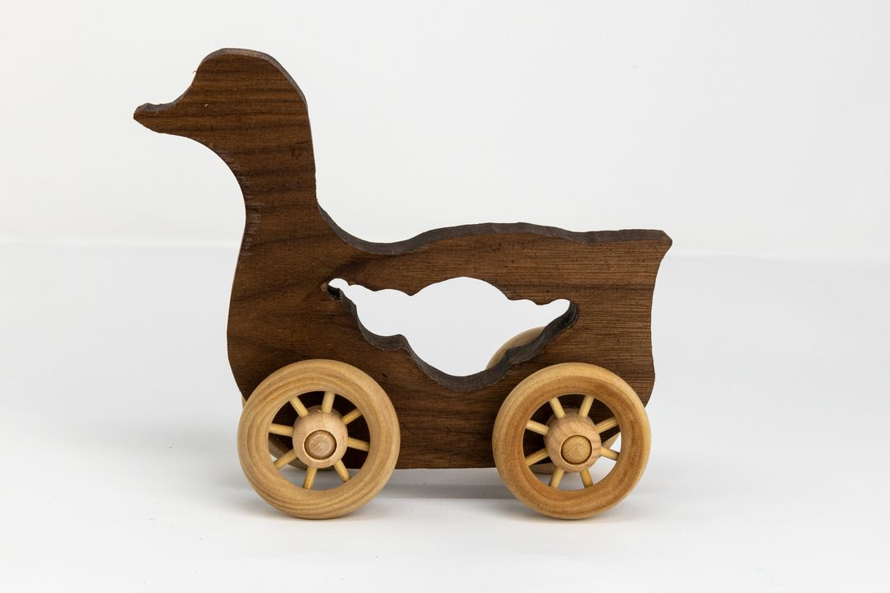

02 / Structural designTruss Bridge
Truss Bridge
Design
From early sketches to simulation, fabrication, and load testing.
- SolidWorks
- SAP2000
- FEA

Mechanical engineering & design
Exploring mechanical engineering, robotics, and design through hands-on making and experimentation.
Explore selected work
System modeling · PID control · Hardware validation
From early sketches to simulation, fabrication, and load testing.

03 / Product design · Fabrication

04 / Human-centered design · Prototyping
Let's get in touch
brooke.bao.ug@dartmouth.edu